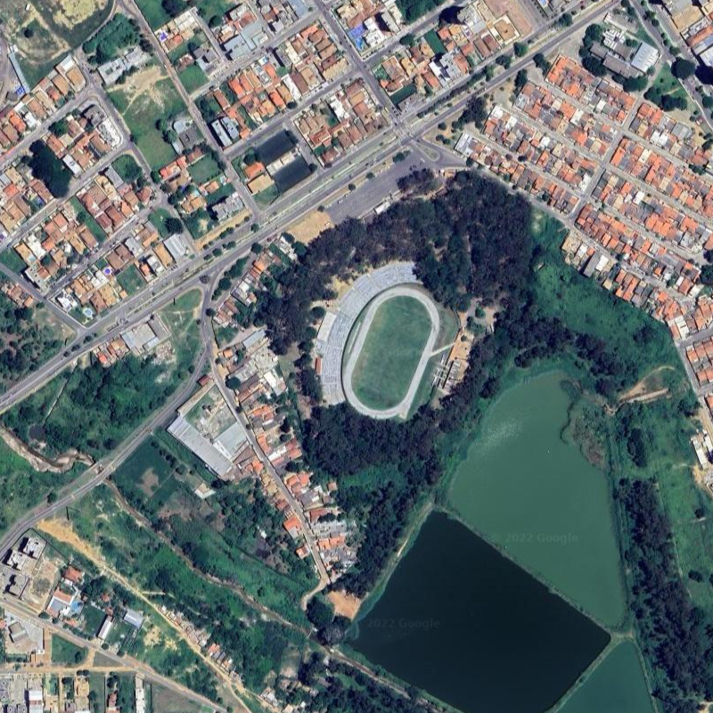

Estádio Conflito

Brocou!
A resposta certa é:
A resposta certa é:
Estádio Lomanto Júnior (Lomantão)
Vitória da Conquista - BA
Deu ruim!
A resposta certa é:
A resposta certa é:
Estádio Lomanto Júnior (Lomantão)
Vitória da Conquista - BA
Digite as primeiras letras, clique no nome do estádio e aperte enter no teclado.
(é provisório)
Você tem chances
⚽
⚽
⚽
⚽
⚽
Dicas:
- O nome do estádio é em homenagem a um ex-governador do Estado da Bahia.
- O estádio é considerado um dos mais bonitos da Bahia e já recebeu duas finais de Baianão.
- O recorde de público do estádio é de 15.728 pessoas, num jogo do Vitória, em janeiro de 2007.
- O mascote do principal time mandante no estádio é um bode.
- Foi inaugurado em 1966, numa partida entre Flamengo x Vasco.